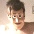

My Story
My name is Dennis van Wijngaarden, and I have always had a passion for video games and music. I started creating video games many years ago, and during that time I discovered how much I enjoyed making music. That moment pushed me toward becoming a music producer.
Over the years, I tried many different DAWs. I started with FL Studio, then moved on to Cubase and Studio One. Each one helped me learn more about producing and finding my own style.
My Catalyst Vivid
In 2025, I tried joining Discord communities again for the first time in many years. I slowly started interacting with people, and in my very first server I met someone named VividExile. Even though I often felt alone in that server, I somehow felt connected to him. He seemed troubled by his life, since he is an ex‑military veteran, but he still showed a lot of strength and kindness.
As we talked more, I noticed his health and energy were often low, and I tried my best to support him. At the same time, he supported me too. We helped each other through a lot, and that connection meant more than I expected. Looking back, I think the server owner probably hurt his feelings as well, not just mine.
Even though the owner of that first server ended up hurting me, meeting Vivid proved that I could keep going and do more than I thought. He was also the reason I became a streamer again, and through him I met many new people, including Erik.
Meeting Erik and My First Song
When the first server owner turned out to be a bad person, I followed Vivid to a Discord server run by a VTuber. After a few weeks in that community, I came across someone named Erik. I first noticed him because of a Twitter post where he made the Devourer of Gods his pet, and I thought it was really funny. I've always loved Terraria, so it immediately caught my attention.
As I started interacting with him, we slowly began collaborating, playing together, as he became my friend. Around that time, I mentioned that I wanted to make a song again, and that I didn't mind making one for free. Erik told me he would love to have a song, and that simple moment was what started everything. Over time, our connection made the idea of creating music feel exciting again.
That led to the creation of my first released song. In 2025, I published it on music platforms like Spotify. The track was called Snowfall, and it was made for Erik, also known as eri_k416. The song was written about his character Viona, and it was also the first time I ever wrote lyrics for a song. Because of that, Snowfall became a very special and meaningful project for me.